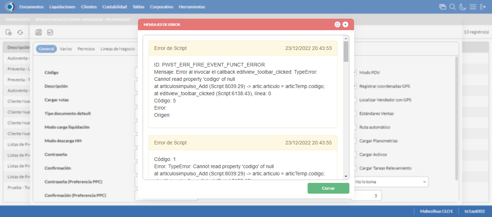
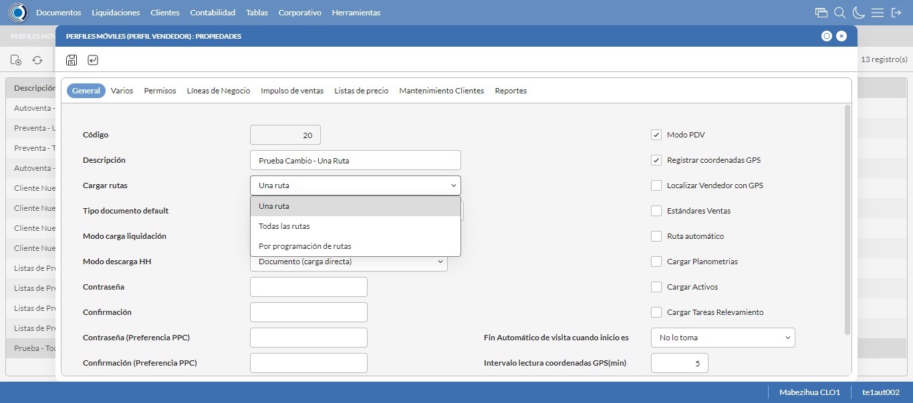
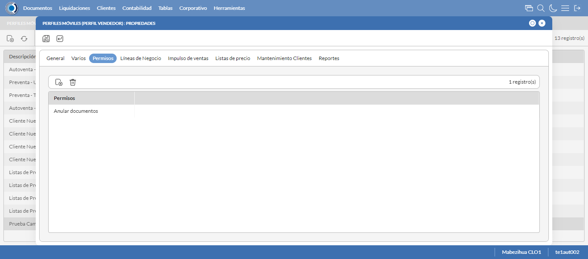

Desarrollado por : Area de Testing PWST
Fecha y hora de inicio : 2022-12-23 14:43:14
Duracion : 0:01:48.178749
Resultado : Total 8，Correctos 6 ，Errores 2 ，Taza de resultado 75.00%
Resumen 75.00% Errores 2 Fallidos 0 Correctos 6 Test realizados 8
| Caso de Prueba | Total | Correctos | Fallido | Error | Detalles | Captura del error |
| PerfilesMoviles.Test: Escenario 1 de Perfiles Moviles | 8 | 6 | 0 | 2 | Detalles | |
test |
ft1_1: 2022-12-23 14:43:15,550 - root - INFO - Se abre el chrome
2022-12-23 14:43:18,070 - root - INFO - Entra a la URL
2022-12-23 14:43:18,213 - root - INFO - Maximiza la pantalla
Traceback (most recent call last):
File "C:\Users\gerar\AppData\Local\Programs\Python\Python311\Lib\site-packages\selenium\webdriver\remote\switch_to.py", line 88, in frame
frame_reference = self._driver.find_element(By.ID, frame_reference)
^^^^^^^^^^^^^^^^^^^^^^^^^^^^^^^^^^^^^^^^^^^^^^^^^
File "C:\Users\gerar\AppData\Local\Programs\Python\Python311\Lib\site-packages\selenium\webdriver\remote\webdriver.py", line 861, in find_element
return self.execute(Command.FIND_ELEMENT, {"using": by, "value": value})["value"]
^^^^^^^^^^^^^^^^^^^^^^^^^^^^^^^^^^^^^^^^^^^^^^^^^^^^^^^^^^^^^^^^^
File "C:\Users\gerar\AppData\Local\Programs\Python\Python311\Lib\site-packages\selenium\webdriver\remote\webdriver.py", line 444, in execute
self.error_handler.check_response(response)
File "C:\Users\gerar\AppData\Local\Programs\Python\Python311\Lib\site-packages\selenium\webdriver\remote\errorhandler.py", line 249, in check_response
raise exception_class(message, screen, stacktrace)
selenium.common.exceptions.NoSuchElementException: Message: no such element: Unable to locate element: {"method":"css selector","selector":"[id="mainFrame"]"}
(Session info: chrome=108.0.5359.125)
Stacktrace:
Backtrace:
(No symbol) [0x0077F243]
(No symbol) [0x00707FD1]
(No symbol) [0x005FD04D]
(No symbol) [0x0062C0B0]
(No symbol) [0x0062C22B]
(No symbol) [0x0065E612]
(No symbol) [0x006485D4]
(No symbol) [0x0065C9EB]
(No symbol) [0x00648386]
(No symbol) [0x0062163C]
(No symbol) [0x0062269D]
GetHandleVerifier [0x00A19A22+2655074]
GetHandleVerifier [0x00A0CA24+2601828]
GetHandleVerifier [0x00828C0A+619850]
GetHandleVerifier [0x00827830+614768]
(No symbol) [0x007105FC]
(No symbol) [0x00715968]
(No symbol) [0x00715A55]
(No symbol) [0x0072051B]
BaseThreadInitThunk [0x76347D69+25]
RtlInitializeExceptionChain [0x7731BB9B+107]
RtlClearBits [0x7731BB1F+191]
During handling of the above exception, another exception occurred:
Traceback (most recent call last):
File "C:\Users\gerar\AppData\Local\Programs\Python\Python311\Lib\site-packages\selenium\webdriver\remote\switch_to.py", line 91, in frame
frame_reference = self._driver.find_element(By.NAME, frame_reference)
^^^^^^^^^^^^^^^^^^^^^^^^^^^^^^^^^^^^^^^^^^^^^^^^^^^
File "C:\Users\gerar\AppData\Local\Programs\Python\Python311\Lib\site-packages\selenium\webdriver\remote\webdriver.py", line 861, in find_element
return self.execute(Command.FIND_ELEMENT, {"using": by, "value": value})["value"]
^^^^^^^^^^^^^^^^^^^^^^^^^^^^^^^^^^^^^^^^^^^^^^^^^^^^^^^^^^^^^^^^^
File "C:\Users\gerar\AppData\Local\Programs\Python\Python311\Lib\site-packages\selenium\webdriver\remote\webdriver.py", line 444, in execute
self.error_handler.check_response(response)
File "C:\Users\gerar\AppData\Local\Programs\Python\Python311\Lib\site-packages\selenium\webdriver\remote\errorhandler.py", line 249, in check_response
raise exception_class(message, screen, stacktrace)
selenium.common.exceptions.NoSuchElementException: Message: no such element: Unable to locate element: {"method":"css selector","selector":"[name="mainFrame"]"}
(Session info: chrome=108.0.5359.125)
Stacktrace:
Backtrace:
(No symbol) [0x0077F243]
(No symbol) [0x00707FD1]
(No symbol) [0x005FD04D]
(No symbol) [0x0062C0B0]
(No symbol) [0x0062C22B]
(No symbol) [0x0065E612]
(No symbol) [0x006485D4]
(No symbol) [0x0065C9EB]
(No symbol) [0x00648386]
(No symbol) [0x0062163C]
(No symbol) [0x0062269D]
GetHandleVerifier [0x00A19A22+2655074]
GetHandleVerifier [0x00A0CA24+2601828]
GetHandleVerifier [0x00828C0A+619850]
GetHandleVerifier [0x00827830+614768]
(No symbol) [0x007105FC]
(No symbol) [0x00715968]
(No symbol) [0x00715A55]
(No symbol) [0x0072051B]
BaseThreadInitThunk [0x76347D69+25]
RtlInitializeExceptionChain [0x7731BB9B+107]
RtlClearBits [0x7731BB1F+191]
During handling of the above exception, another exception occurred:
Traceback (most recent call last):
File "C:\xampp\htdocs\versiones\automatizaciones\AutoPWST\01PM\testCase\PerfilesMoviles.py", line 30, in test
self.driver.switch_to.frame("mainFrame")
File "C:\Users\gerar\AppData\Local\Programs\Python\Python311\Lib\site-packages\selenium\webdriver\remote\switch_to.py", line 93, in frame
raise NoSuchFrameException(frame_reference)
selenium.common.exceptions.NoSuchFrameException: Message: mainFrame
|
|
||||
test_000: Ingresa a la base de datos |
pt1_2: 2022-12-23 14:43:21,301 - root - INFO - Escribe el usuario
2022-12-23 14:43:21,382 - root - INFO - Escribe la contraseña
2022-12-23 14:43:21,453 - root - INFO - Se dio clic en el boton ingresar
2022-12-23 14:43:23,702 - root - INFO - Ejecutar Enterprise
2022-12-23 14:43:27,734 - root - INFO - Cambia entre pestañas
|
|
||||
test_001: Abre menu y ejecuta pantalla |
pt1_3: 2022-12-23 14:43:32,206 - root - INFO - Abre la pantalla de Perfiles Moviles
2022-12-23 14:43:32,774 - root - INFO - La pantalla ejecutada es Perfiles Moviles
2022-12-23 14:43:32,774 - root - INFO - Captura: C:\xampp\htdocs\versiones\automatizaciones\AutoPWST\01PM\report\img screen：20221223_14_43_32.png
2022-12-23 14:43:32,917 - root - INFO - Se presiona el boton 'Nuevo', para crear un nuevo registro.
|

|
||||
test_002: Abre la ventana de nuevo y crear un registro |
pt1_4: 2022-12-23 14:43:33,471 - root - INFO - Se abrio la pantalla para el ingreso de un registro nuevo.
2022-12-23 14:43:33,521 - root - INFO - Ingresa el codigo del nuevo registro
2022-12-23 14:43:33,613 - root - INFO - Ingresa la Descripcion del nuevo registro
2022-12-23 14:43:33,973 - root - INFO - Se selecciono la opción Todas las Rutas
2022-12-23 14:43:34,068 - root - INFO - Ingresa el Tipo documento default del nuevo registro
2022-12-23 14:43:34,417 - root - INFO - Se selecciono la opción Normal
2022-12-23 14:43:35,024 - root - INFO - Se selecciono el registro de Modo carga liquidación
2022-12-23 14:43:35,367 - root - INFO - Se selecciono la opción Documento (carga directa)
2022-12-23 14:43:35,431 - root - INFO - Se dió click en el checkbox Modo PDV
2022-12-23 14:43:35,480 - root - INFO - Se dió click en el checkbox Registrar coordenadas GPS
2022-12-23 14:43:35,811 - root - INFO - Se dió click en la opción No lo toma
2022-12-23 14:43:35,883 - root - INFO - Ingresa el Intervalo lectura coordenadas GPS(min) del nuevo registro
2022-12-23 14:43:35,884 - root - INFO - Captura: C:\xampp\htdocs\versiones\automatizaciones\AutoPWST\01PM\report\img screen：20221223_14_43_35.png
2022-12-23 14:43:38,088 - root - INFO - Se hace el cambio de pestaña Varios para continuar con el registro nuevo
2022-12-23 14:43:38,142 - root - INFO - Se dió click en el checkbox Cargar resumen de cuentas únicamente del vendedor de la ruta
2022-12-23 14:43:38,198 - root - INFO - Se dió click en el checkbox Verificar límite de crédito
2022-12-23 14:43:38,254 - root - INFO - Se dió click en el checkbox Verificar opción 'guardar como' del tipo de documento
2022-12-23 14:43:38,305 - root - INFO - Se dió click en el checkbox Permitir Pagos
2022-12-23 14:43:39,395 - root - INFO - Se dió click en el botón espacio para mover la pantalla hacía abajo
2022-12-23 14:43:40,732 - root - INFO - Se selecciono el registro de Disco de Datos
2022-12-23 14:43:41,394 - root - INFO - Se dió click en la opción Autoventa
2022-12-23 14:43:41,453 - root - INFO - Se dió click en el checkbox Enviar documentos de inmediato al servidor.
2022-12-23 14:43:41,507 - root - INFO - Se hace el cambio a la pestaña Permisos para continuar con el registro nuevo
2022-12-23 14:43:42,063 - root - INFO - Se presiona el boton 'Nuevo de la pestaña Permiso' , para crear un nuevo registro.
2022-12-23 14:43:43,490 - root - INFO - Se dió click en la opción Inihibir Georeferenciación
2022-12-23 14:43:43,545 - root - INFO - Se presiona el boton 'Guardar de la pestaña Permiso', para guardar el registro.
2022-12-23 14:43:43,856 - root - INFO - Se hace el cambio a la pestaña Lineas de Negocio para continuar con el registro nuevo
2022-12-23 14:43:44,444 - root - INFO - Se presiona el boton 'Nuevo de la pestaña Permiso' , para crear un nuevo registro.
2022-12-23 14:43:45,903 - root - INFO - Se selecciono el registro de Linea de negocio
2022-12-23 14:43:46,224 - root - INFO - Se presiona el boton 'Guardar de la pestaña Linea de Negocio', para guardar el registro.
2022-12-23 14:43:46,538 - root - INFO - Se presiona el boton 'Nuevo de la pestaña Permiso' , para crear un nuevo registro.
2022-12-23 14:43:47,977 - root - INFO - Se selecciono el registro de Linea de negocio
2022-12-23 14:43:48,312 - root - INFO - Se presiona el boton 'Guardar de la pestaña Linea de Negocio', para guardar el registro.
2022-12-23 14:43:48,640 - root - INFO - Se presiona el boton 'Nuevo de la pestaña Permiso' , para crear un nuevo registro.
2022-12-23 14:43:50,078 - root - INFO - Se selecciono el registro de Linea de negocio
2022-12-23 14:43:50,431 - root - INFO - Se presiona el boton 'Guardar de la pestaña Linea de Negocio', para guardar el registro.
2022-12-23 14:43:50,754 - root - INFO - Se hace el cambio a la pestaña Impulso Ventas para continuar con el registro nuevo
2022-12-23 14:43:51,326 - root - INFO - Se presiona el boton 'Nuevo de la pestaña Impulso de Ventas' , para crear un nuevo registro.
2022-12-23 14:43:51,893 - root - INFO - Ingresa el Articulo del nuevo registro
2022-12-23 14:43:54,050 - root - INFO - Se presiona el boton 'Guardar de la pestaña Impulso de Ventas', para guardar el registro.
2022-12-23 14:43:56,145 - root - INFO - Se presiona el boton 'Nuevo de la pestaña Impulso de Ventas' , para crear un nuevo registro.
2022-12-23 14:43:56,806 - root - INFO - Ingresa el Articulo del nuevo registro
2022-12-23 14:43:59,002 - root - INFO - Se presiona el boton 'Guardar de la pestaña Impulso de Ventas', para guardar el registro.
2022-12-23 14:44:01,074 - root - INFO - Se presiona el boton 'Nuevo de la pestaña Impulso de Ventas' , para crear un nuevo registro.
2022-12-23 14:44:02,220 - root - INFO - Ingresa el Articulo del nuevo registro
2022-12-23 14:44:04,409 - root - INFO - Se presiona el boton 'Guardar de la pestaña Impulso de Ventas', para guardar el registro.
2022-12-23 14:44:06,490 - root - INFO - Se presiona el boton 'Nuevo de la pestaña Impulso de Ventas' , para crear un nuevo registro.
2022-12-23 14:44:07,104 - root - INFO - Ingresa el Articulo del nuevo registro
2022-12-23 14:44:09,280 - root - INFO - Se presiona el boton 'Guardar de la pestaña Impulso de Ventas', para guardar el registro.
2022-12-23 14:44:11,364 - root - INFO - Se presiona el boton 'Nuevo de la pestaña Impulso de Ventas' , para crear un nuevo registro.
2022-12-23 14:44:11,998 - root - INFO - Ingresa el Articulo del nuevo registro
2022-12-23 14:44:14,208 - root - INFO - Se presiona el boton 'Guardar de la pestaña Impulso de Ventas', para guardar el registro.
2022-12-23 14:44:16,291 - root - INFO - Se hace el cambio a la pestaña Mantenimiento Clientes para continuar con el registro nuevo
2022-12-23 14:44:16,890 - root - INFO - Se dió click en el checkbox Permiso agregar nuevos clientes
2022-12-23 14:44:16,951 - root - INFO - Se dió click en el checkbox Permiso modificar clientes existentes
2022-12-23 14:44:17,942 - root - INFO - Se selecciono el registro de Ruta Referencia
2022-12-23 14:44:18,241 - root - INFO - Se dió click en el checkbox Clasificación 1
2022-12-23 14:44:18,839 - root - INFO - Se dió click en el checkbox Clasificación 2
2022-12-23 14:44:18,997 - root - INFO - Se dió click en el checkbox Clasificación 3
2022-12-23 14:44:19,159 - root - INFO - Se dió click en el checkbox Colonia
2022-12-23 14:44:19,329 - root - INFO - Se dió click en el checkbox Codigo Postal
2022-12-23 14:44:19,498 - root - INFO - Se dió click en el checkbox Direccion
2022-12-23 14:44:19,642 - root - INFO - Se dió click en el checkbox Entorno PDV
2022-12-23 14:44:19,858 - root - INFO - Se dió click en el checkbox Esquina 1
2022-12-23 14:44:20,007 - root - INFO - Se dió click en el checkbox Esquina 2
2022-12-23 14:44:20,200 - root - INFO - Se dió click en el checkbox Paises
2022-12-23 14:44:20,658 - root - INFO - Se dió click en el checkbox Departamento
2022-12-23 14:44:20,785 - root - INFO - Se dió click en el checkbox Localidad
2022-12-23 14:44:20,969 - root - INFO - Se da clic en el boton Guardar; se debe crear un nuevo registro.
|

|
||||
test_003: Repite el Registro |
pt1_5: 2022-12-23 14:44:21,492 - root - INFO - Se presiona el boton 'Refrescar', para crear un nuevo registro igual al anterior.
2022-12-23 14:44:23,572 - root - INFO - Se presiona el boton 'Nuevo', para crear un nuevo registro igual al anterior.
2022-12-23 14:44:24,214 - root - INFO - Se abrio la pantalla para el ingreso de un registro nuevo.
2022-12-23 14:44:24,263 - root - INFO - Ingresa el codigo del nuevo registro
2022-12-23 14:44:24,354 - root - INFO - Ingresa la Descripcion del nuevo registro
2022-12-23 14:44:24,707 - root - INFO - Se selecciono la opción Todas las Rutas
2022-12-23 14:44:24,817 - root - INFO - Ingresa el Tipo documento default del nuevo registro
2022-12-23 14:44:25,172 - root - INFO - Se selecciono la opción Normal
2022-12-23 14:44:26,091 - root - INFO - Se selecciono el registro de Modo carga liquidación
2022-12-23 14:44:26,524 - root - INFO - Se selecciono la opción Documento (carga directa)
2022-12-23 14:44:26,614 - root - INFO - Se dió click en el checkbox Modo PDV
2022-12-23 14:44:26,672 - root - INFO - Se dió click en el checkbox Registrar coordenadas GPS
2022-12-23 14:44:27,038 - root - INFO - Se dió click en la opción No lo toma
2022-12-23 14:44:27,130 - root - INFO - Ingresa el Intervalo lectura coordenadas GPS(min) del nuevo registro
2022-12-23 14:44:29,188 - root - INFO - Se da clic en el boton Guardar; NO se debe crear un nuevo registro.
2022-12-23 14:44:33,228 - root - INFO - Captura: C:\xampp\htdocs\versiones\automatizaciones\AutoPWST\01PM\report\img screen：20221223_14_44_33.png
2022-12-23 14:44:33,418 - root - INFO - Se presiona el boton 'Cerrar', para cerrar el mensaje de duplicidad de llave primaria
2022-12-23 14:44:33,874 - root - INFO - Se presiona el boton 'Cerrar', para cerrar la ventana
|
 | ||||
test_004: Modificar el registro |
pt1_6: 2022-12-23 14:44:34,037 - root - INFO - Se presiona el boton 'Refrescar', para proceder a modificar el registro.
2022-12-23 14:44:36,630 - root - INFO - Se da clic en el registro creado, para proceder a modificarlo.
2022-12-23 14:44:37,296 - root - INFO - Se modifica el contenido del campo Observaciones 1
2022-12-23 14:44:37,640 - root - INFO - Se selecciono la opción Una Ruta
2022-12-23 14:44:37,640 - root - INFO - Captura: C:\xampp\htdocs\versiones\automatizaciones\AutoPWST\01PM\report\img screen：20221223_14_44_37.png
2022-12-23 14:44:37,806 - root - INFO - Se hace el cambio de pestaña Permisos para continuar con la modificación del registro
2022-12-23 14:44:38,370 - root - INFO - Se presiona el boton 'Nuevo de la pestaña Permiso' , para crear un nuevo registro.
2022-12-23 14:44:39,290 - root - INFO - Se dió click en la opción Anular Documentos
2022-12-23 14:44:39,353 - root - INFO - Se presiona el boton 'Guardar de la pestaña Permiso', para guardar el registro.
2022-12-23 14:44:39,979 - root - INFO - Se hace el cambio a la pestaña Lineas de Negocio para continuar con la modificación del registro
2022-12-23 14:44:40,204 - root - INFO - Se hace el cambio de pestaña Impulso Ventas para continuar con la modificación del registro
2022-12-23 14:44:41,889 - root - INFO - Se da clic en el registro creado, para proceder a modificarlo.
2022-12-23 14:44:41,947 - root - INFO - Se presiona el boton 'Eliminar de Impulso Ventas', para eliminar el primer registro.
2022-12-23 14:44:43,526 - root - INFO - Se da clic en el registro creado, para proceder a modificarlo.
2022-12-23 14:44:43,562 - root - INFO - Se presiona el boton 'Eliminar de Impulso Ventas', para eliminar el segundo registro.
2022-12-23 14:44:45,128 - root - INFO - Se da clic en el registro creado, para proceder a modificarlo.
2022-12-23 14:44:45,161 - root - INFO - Se presiona el boton 'Eliminar de Impulso Ventas', para eliminar el tercer registro.
2022-12-23 14:44:46,740 - root - INFO - Se da clic en el registro creado, para proceder a modificarlo.
2022-12-23 14:44:46,776 - root - INFO - Se presiona el boton 'Eliminar de Impulso Ventas', para eliminar el cuarto registro.
2022-12-23 14:44:48,346 - root - INFO - Se da clic en el registro creado, para proceder a modificarlo.
2022-12-23 14:44:48,393 - root - INFO - Se presiona el boton 'Eliminar de Impulso Ventas', para eliminar el quinto registro.
2022-12-23 14:44:49,446 - root - INFO - Se da clic en el boton Guardar; se debe modificar la informacion del registro.
|
 | ||||
test_005: Eliminar el registro creado |
ft1_7: 2022-12-23 14:44:50,018 - root - INFO - Se presiona el boton 'Refrescar', para proceder a eliminar el registro.
2022-12-23 14:44:52,583 - root - INFO - Se da clic en el registro creado, para proceder a eliminarlo.
2022-12-23 14:44:53,670 - root - INFO - Se hace el cambio de pestaña Permisos para continuar con la eliminación del registro
2022-12-23 14:44:54,743 - root - INFO - Se da clic en el primer registro de Permisos, para proceder a eliminarlo.
2022-12-23 14:44:54,802 - root - INFO - Se presiona el boton 'Eliminar de Permiso', para eliminar el segundo registro.
2022-12-23 14:44:55,112 - root - ERROR - No se encontró el segundo registro de la pestaña permisos, validar que la acción anterior haya finalizado, que el xpath sea el correcto o que la página no presente lentitud
2022-12-23 14:44:58,113 - root - INFO - Captura: C:\xampp\htdocs\versiones\automatizaciones\AutoPWST\01PM\report\img screen：20221223_14_44_58.png
2022-12-23 14:45:02,540 - root - INFO - Se cierra chrome
Traceback (most recent call last):
File "C:\xampp\htdocs\versiones\automatizaciones\AutoPWST\01PM\testCase\PerfilesMoviles.py", line 136, in test_005
raise Exception()
Exception
|
 | ||||
test_006: Cerrar_Navegador |
Correcto |
|
||||
| Caso de prueba | 8 | 6 | 0 | 2 | Taza de resultado：75.00% | |